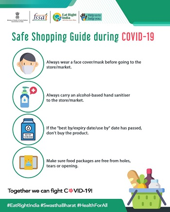

Covid-19 Tracker India
An opensource project to keep track of all the COVID-19 cases around the world.
Confirmed
Active
Recovered
Deceased
"Prevention is the Cure."
Stay Indoors Stay Safe.
*Click on the Confirmed/Recovered/Deaths buttons above to see the chart individually.*
GUIDELINES
Revised Discharge Policy for COVID-19
- Mild/very mild/pre-symptomatic cases
- Moderate cases admitted to Dedicated COVID Health Centre (Oxygen beds)
- Patients whose symptoms resolve within 3 days and maintains saturation above 95% for theDetails...
CPCB Guidelines for disposal of COVID 19
In order to deal with COVID-19 pandemic, State and Central Governments have initiated various steps, which include setting up of quarantine centers/camps, Isolation wards, sample collection centers and laboratories.Following specific guidelines for management of waste generated during diagnostics and treatment of COVID-19 suspectedDetails...
Guidelines for Quarantine facilities
Quarantine is the separation and restriction of movement or activities of persons who are not ill but who are believed to have been exposed to infection, for the purpose of preventing transmission of disease. Persons are usually quarantined in their homes, but they may also be quarantined in community-based facilities. Quarantine can be Details...
Guidelines to be followed on detection of suspect/confirmed COVID-19 case in a non-COVID Health Facility
BACKGROUND
here have been some instances of hospitals having closed down as few health care workers(HCW) working there turned out to be positive for COVID -19. Also some non-COVID healthfacilities have reported confirmation of COVID-19, in patients admitted for unrelated/non-respiratory illness, causing undue apprehension among healthcare workers, sometimesleading to impaired functionality of such hospitals Details...
Home Quarantine
Detection of a travel related/unrelated suspect case of novel Coronavirus Disease (COVID- 19) will be followed by rapid isolation of such cases in designated health facilities and line listing of all contacts of such cases. Home quarantine is applicable to all such contacts of a suspect or confirmed case of COVID-19. Details...
Home based care
Novel Corona Virus (2019-nCoV) Any person(s) suggestive of 2019-nCoV, should be confined at home for a period of 14 days and avoid close contact with public and other members in the family. Guiding Principles for home care:-
- Be informed about the illness.
- Stay home, preferably isolate himself / herself in a Details...
Awareness


FREQUENTLY ASKED QUESTIONS
Corona viruses are a large family of viruses which may cause illness in animals or humans. In humans, several coronaviruses are known to cause respiratory infections ranging from the common cold to more severe diseases such as Middle East Respiratory Syndrome (MERS) and Severe Acute Respiratory Syndrome (SARS). The most recently discovered coronavirus causes coronavirus disease COVID-19.
The most common symptoms of COVID-19 are fever, tiredness, and dry cough. Some patients may have aches and pains, nasal congestion, runny nose, sore throat or diarrhea. These symptoms are usually mild and begin gradually.People with fever, cough and difficulty breathing should seek medical attention.
Studies to date suggest that the virus that causes COVID-19 is mainly transmitted through contact with respiratory droplets rather than through the air. See previous answer on “How does COVID-19 spread?
The main way the disease spreads is through respiratory droplets expelled by someone who is coughing. The risk of catching COVID-19 from someone with no symptoms at all is very low. However, many people with COVID-19 experience only mild symptoms. This is particularly true at the early stages of the disease.
The risk of catching COVID-19 from the feces of an infected person appears to be low. While initial investigations suggest the virus may be present in feces in some cases, spread through this route is not a main feature of the outbreak. The ongoing research on the ways COVID-19 is spread and will continue to share new findings.
People can catch COVID-19 from others who have the virus. The disease can spread from person to person through small droplets from the nose or mouth which are spread when a person with COVID-19 coughs or exhales. These droplets land on objects and surfaces around the person. Other people then catch COVID-19 by touching these objects or surfaces, then touching their eyes, nose or mouth.
Contact Us
Central Helpline Number for corona-virus: - +91-11-23978046
| S. No | Name of the State | Helpline Nos. |
|---|---|---|
| 1 | Andhra Pradesh | 0866-2410978 |
| 2 | Arunachal Pradesh | 9436055743 |
| 3 | Assam | 6913347770 |
| 4 | Bihar | 104 |
| 5 | Chhattisgarh | 104 |
| 6 | Goa | 104 |
| 7 | Gujarat | 104 |
| 8 | Haryana | 8558893911 |
| 9 | Himachal Pradesh | 104 |
| 10 | Jharkhand | 104 |
| 11 | Karnataka | 104 |
| 12 | Kerala | 0471-2552056 |
| 13 | Madhya Pradesh | 104 |
| 14 | Maharashtra | 020-26127394 |
| 15 | Manipur | 3852411668 |
| 16 | Meghalaya | 108 |
| 17 | Mizoram | 102 |
| 18 | Nagaland | 7005539653 |
| 19 | Odisha | 9439994859 |
| 20 | Punjab | 104 |
| 21 | Rajasthan | 0141-2225624 |
| 22 | Sikkim | 104 |
| 23 | Tamil Nadu | 044-29510500 |
| 24 | Telengana | 104 |
| 25 | Tripura | 0381-2315879 |
| 26 | Utrakhand | 104 |
| 27 | Uttar Pradesh | 18001805145 |
| 28 | West Bengal | 1800313444222, 03323412600 |
| S. No | Name of Union Territory (UT) | Helpline Nos. |
|---|---|---|
| 1 | Andaman and Nicobar Islands | 03192-232102 |
| 2 | Chandigarh | 9779558282 |
| 3 | Dadra and Nagar Haveli and Daman & Diu | 104 |
| 4 | Delhi | 011-22307145 |
| 5 | Jammu & Kashmir | 01912520982, 0194-2440283 |
| 6 | Ladakh | 01982256462 |
| 7 | Lakshadweep | 104 |
